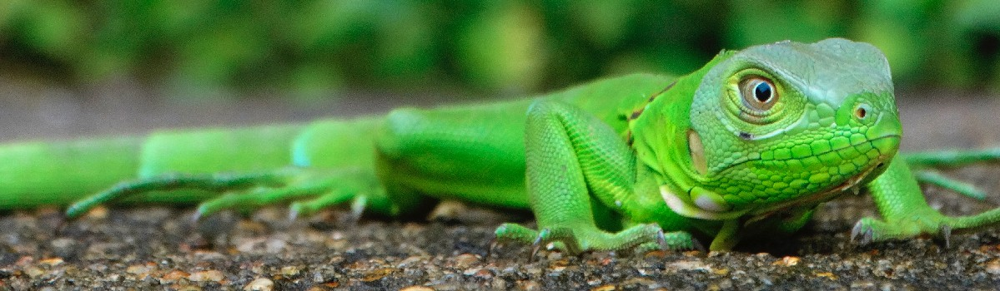
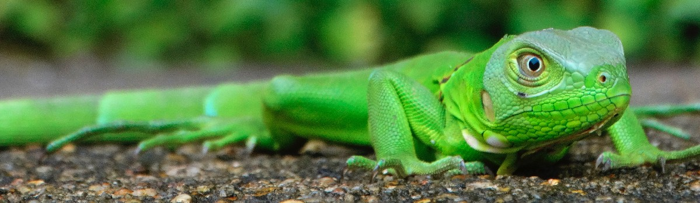
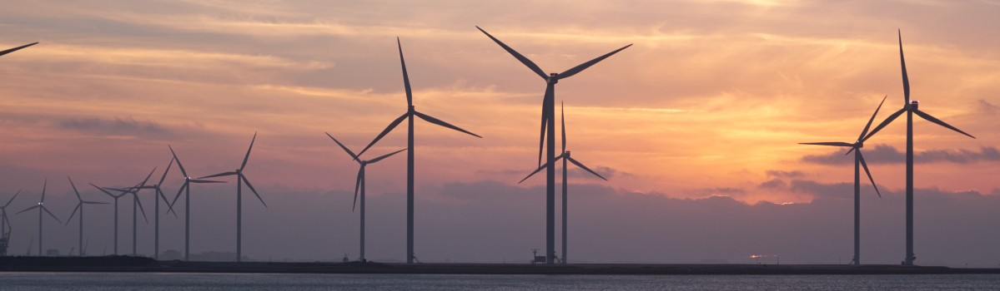
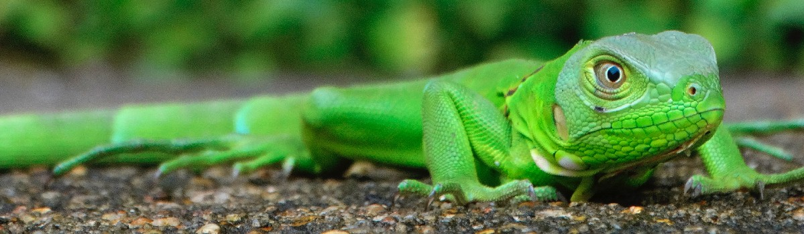
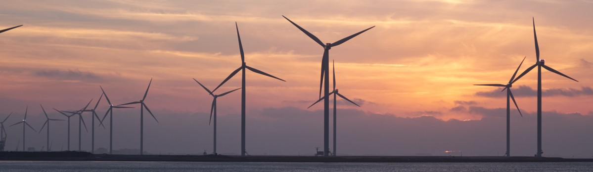
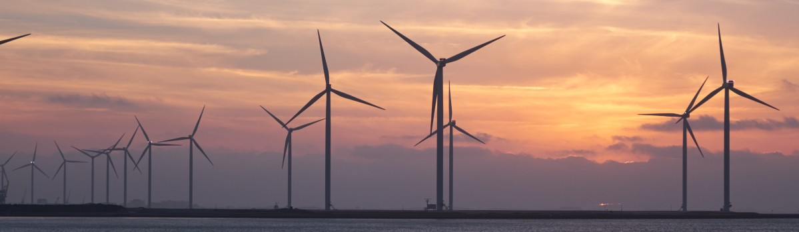
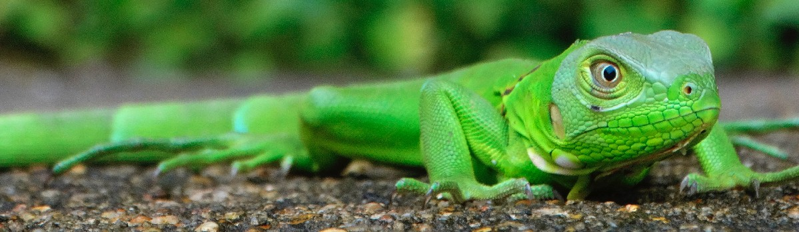
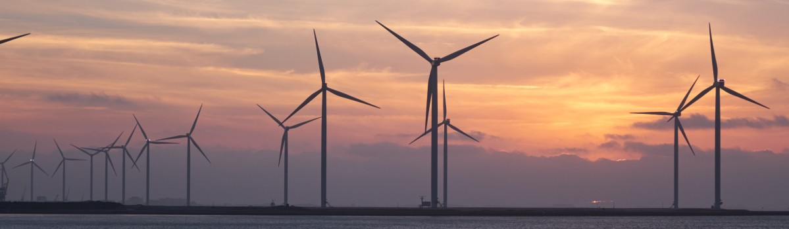

Desenvolvido para curso Técnico de Informática. Somente para fins educativos.
 

 





Nós da Natural Tree queremos fazer do planeta um mundo melhor e você pode ajudar!
Manter o ambiente limpo é muito importante para que se preserve o bem-estar e a saúde das pessoas que convivem no local. Além da conservação para um ambiente mais saudável, manter o local adequadamente limpo e organizado traz benefícios relacionados a um maior aconchego e conforto.
As empresas percebem que os custos para atuar com prevenção na redução do passivo ambiental são inferiores do que os existentes com reforma do efetivo depois de ser multado pelo Estado. O desenvolvimento sustentável também engloba o respeito aos direitos humanos nas rotinas de trabalho, por isso todos podemos tomar iniciativa de alguma forma.
O mundo sustentável precisa da ajuda das empresas para que o costume se torne natural entre as populações. A maior parte da vida dos trabalhadores é passada dentro do itinerário. Empregadores que reservam algumas horas para estimular ações educativas no ambiente de trabalho colaboram de forma direta com a promoção da sustentabilidade.
Desenvolvido para curso Técnico de Informática. Somente para fins educativos.